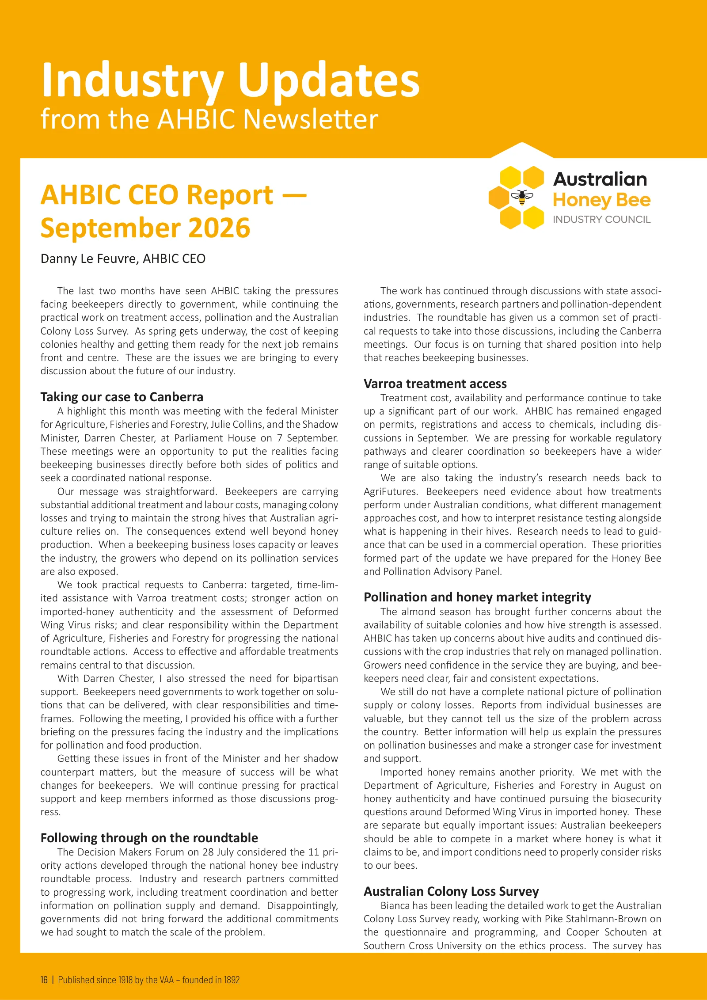

16 | Published since 1918 by the VAA – founded in 1892
Industry Updates
from the AHBIC Newsletter
AHBIC CEO Report —
September 2026
Danny Le Feuvre, AHBIC CEO
The last two months have seen AHBIC taking the pressures
facing beekeepers directly to government, while continuing the
practical work on treatment access, pollination and the Australian
Colony Loss Survey. As spring gets underway, the cost of keeping
colonies healthy and getting them ready for the next job remains
front and centre. These are the issues we are bringing to every
discussion about the future of our industry.
Taking our case to Canberra
A highlight this month was meeting with the federal Minister
for Agriculture, Fisheries and Forestry, Julie Collins, and the Shadow
Minister, Darren Chester, at Parliament House on 7 September.
These meetings were an opportunity to put the realities facing
beekeeping businesses directly before both sides of politics and
seek a coordinated national response.
Our message was straightforward. Beekeepers are carrying
substantial additional treatment and labour costs, managing colony
losses and trying to maintain the strong hives that Australian agri-
culture relies on. The consequences extend well beyond honey
production. When a beekeeping business loses capacity or leaves
the industry, the growers who depend on its pollination services
are also exposed.
We took practical requests to Canberra: targeted, time-lim-
ited assistance with Varroa treatment costs; stronger action on
imported-honey authenticity and the assessment of Deformed
Wing Virus risks; and clear responsibility within the Department
of Agriculture, Fisheries and Forestry for progressing the national
roundtable actions. Access to effective and affordable treatments
remains central to that discussion.
With Darren Chester, I also stressed the need for bipartisan
support. Beekeepers need governments to work together on solu-
tions that can be delivered, with clear responsibilities and time-
frames. Following the meeting, I provided his office with a further
briefing on the pressures facing the industry and the implications
for pollination and food production.
Getting these issues in front of the Minister and her shadow
counterpart matters, but the measure of success will be what
changes for beekeepers. We will continue pressing for practical
support and keep members informed as those discussions prog-
ress.
Following through on the roundtable
The Decision Makers Forum on 28 July considered the 11 pri-
ority actions developed through the national honey bee industry
roundtable process. Industry and research partners committed
to progressing work, including treatment coordination and better
information on pollination supply and demand. Disappointingly,
governments did not bring forward the additional commitments
we had sought to match the scale of the problem.
The work has continued through discussions with state associ-
ations, governments, research partners and pollination-dependent
industries. The roundtable has given us a common set of practi-
cal requests to take into those discussions, including the Canberra
meetings. Our focus is on turning that shared position into help
that reaches beekeeping businesses.
Varroa treatment access
Treatment cost, availability and performance continue to take
up a significant part of our work. AHBIC has remained engaged
on permits, registrations and access to chemicals, including dis-
cussions in September. We are pressing for workable regulatory
pathways and clearer coordination so beekeepers have a wider
range of suitable options.
We are also taking the industry’s research needs back to
AgriFutures. Beekeepers need evidence about how treatments
perform under Australian conditions, what different management
approaches cost, and how to interpret resistance testing alongside
what is happening in their hives. Research needs to lead to guid-
ance that can be used in a commercial operation. These priorities
formed part of the update we have prepared for the Honey Bee
and Pollination Advisory Panel.
Pollination and honey market integrity
The almond season has brought further concerns about the
availability of suitable colonies and how hive strength is assessed.
AHBIC has taken up concerns about hive audits and continued dis-
cussions with the crop industries that rely on managed pollination.
Growers need confidence in the service they are buying, and bee-
keepers need clear, fair and consistent expectations.
We still do not have a complete national picture of pollination
supply or colony losses. Reports from individual businesses are
valuable, but they cannot tell us the size of the problem across
the country. Better information will help us explain the pressures
on pollination businesses and make a stronger case for investment
and support.
Imported honey remains another priority. We met with the
Department of Agriculture, Fisheries and Forestry in August on
honey authenticity and have continued pursuing the biosecurity
questions around Deformed Wing Virus in imported honey. These
are separate but equally important issues: Australian beekeepers
should be able to compete in a market where honey is what it
claims to be, and import conditions need to properly consider risks
to our bees.
Australian Colony Loss Survey
Bianca has been leading the detailed work to get the Australian
Colony Loss Survey ready, working with Pike Stahlmann-Brown on
the questionnaire and programming, and Cooper Schouten at
Southern Cross University on the ethics process. The survey has